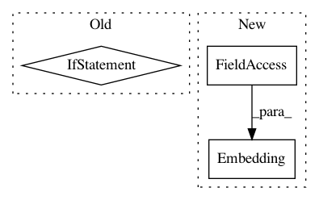

e9aea97df1dc7878827ac193ba75cbea0b3ee351,ludwig/models/modules/sequence_decoders.py,SequenceGeneratorDecoder,__init__,#SequenceGeneratorDecoder#Any#Any#Any#Any#Any#Any#Any#Any#Any#Any#Any#Any#Any#Any#Any#Any#Any#Any#,32
Before Change
self.embeddings_dec = Embedding(num_classes, embedding_size)
self.decoder_cell = LSTMCell(state_size)
if attention_mechanism:
if attention_mechanism == "bahdanau":
pass
elif attention_mechanism == "luong":
self.attention_mechanism = tfa.seq2seq.LuongAttention(
state_size,
None, // todo tf2: confirm on need
memory_sequence_length=max_sequence_length // todo tf2: confirm inputs or output seq length
)
else:
raise ValueError(
"Attention specificaiton "{}" is invalid. Valid values are "
""bahdanau" or "luong".".format(self.attention_mechanism))
self.decoder_cell = tfa.seq2seq.AttentionWrapper(
self.decoder_cell,
self.attention_mechanism
)
self.sampler = tfa.seq2seq.sampler.TrainingSampler()
self.projection_layer = Dense(
units=num_classes,
After Change
else:
self.vocab_size = self.num_classes
self.decoder_embedding = tf.keras.layers.Embedding(
input_dim=output_vocab_size,
output_dim=embedding_dims)
self.dense_layer = tf.keras.layers.Dense(output_vocab_size)
self.decoder_rnncell = tf.keras.layers.LSTMCell(rnn_units)
// Sampler
In pattern: SUPERPATTERN
Frequency: 3
Non-data size: 3
Instances
Project Name: uber/ludwig
Commit Name: e9aea97df1dc7878827ac193ba75cbea0b3ee351
Time: 2020-05-05
Author: jimthompson5802@gmail.com
File Name: ludwig/models/modules/sequence_decoders.py
Class Name: SequenceGeneratorDecoder
Method Name: __init__
Project Name: elbayadm/attn2d
Commit Name: 2a84f46bf0a05ae5b0caaf6724808dfe65dac638
Time: 2018-06-15
Author: alexei.b@gmail.com
File Name: fairseq/models/fconv.py
Class Name: FConvEncoder
Method Name: __init__